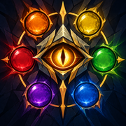

What's new in RiftEye
Patch notes, newest first. Questions or ideas: the RiftEye Discord or the help page.
1.0.32 — 29 October 2026
Smoother on every computer
- RiftEye now skips frames where nothing on the table changed, so it uses much less of your computer during the long still moments of a game. When a card is played it reads again straight away, so new cards still get their name within about a second.
- If your computer struggles to keep up, RiftEye switches itself to Light mode (one look per second) to keep the video smooth, and tells you once. It speeds back up when your computer catches up.
- A smaller download: 57 MB instead of 62 MB. Card text in French, Korean and Chinese is now downloaded only when you pick that language.
Deck lists
- Battlefields go to the right player. On the game client the left battlefield is the bottom player's. On a camera table the bottom battlefield is the right player's.
- A battlefield no longer shows up in both players' lists.
- Lists keep filling in while your pointer is on the panel.
- After you press Clear, a list fills up again quickly.
Game client or camera
- RiftEye tells the game client from a camera table more reliably.
- On the game client, players always sit top and bottom.
- Where the players sit is remembered for each stream.
Tooltips
- Riot's own icons for Might, exhaust, the any-rune symbol and each domain's rune.
- The power cost shows as that many domain symbols.
- Radiance cards now show their power cost.
- If you change the card language, every open stream tab switches to it, including on your other computers.
Tidied up
- The "Card size" setting and the "Measure card size" button are gone: they had no effect.
- The settings page no longer has a "This stream" box that never showed up. Everything for the stream you're watching is in the panel on the video.
1.0.15 – 1.0.21 — 28 October 2026
- One panel for everything: the toolbar button opens the panel on the video, with Game, Players and Settings tabs. Away from a stream, it opens the settings page.
- Latest cards: the Game tab lists cards that were played recently, so you can look up a spell that was on screen only for a moment. Hover any card name in the panel to see the card.
- Deck lists: copy or download each player's list, and clear it to start over.
- Steadier outlines: they no longer shake or jump around.
- Hover by default: new installs outline a card only when you point at it.
- "RiftEye is on" note: a short message appears when RiftEye switches on or off.
- Settings follow you: with Chrome sync, your settings reach your other computers.
- Card text languages: French, Korean and Simplified Chinese.
- Panel fixes: the panel scrolls properly on Twitch and always fits the visible part of the video.
- Table area: drawing it works again after an update.
1.0.8 – 1.0.14 — 24–25 October 2026
- Deck lists from the stream: each player's deck as far as the stream has shown it.
- Game client or camera: set for each stream which one it shows, or let RiftEye work it out.
- Tooltip symbols: energy, runes and exhaust shown as symbols.
- Self-restart: the card engine restarts itself if it ever hangs.
1.0.4 – 1.0.7 — 21 October 2026
- Tooltip sizes: Small, Normal, Large and Extra large; sharper card pictures.
- New shortcuts: Alt+Shift+E (on/off), Alt+Shift+B (table area), Alt+Shift+P (panel). They no longer clash with Twitch, and you can change them at
chrome://extensions/shortcuts. - Links: the website and our Discord.
1.0.0 – 1.0.2 — 16 October 2026
- First release: hover a card on a Twitch or YouTube Riftbound stream to see the whole card. It works on camera tables and on the game client, and runs entirely in your browser.
- Full card data: pictures and full rules text for every card, Radiance included.